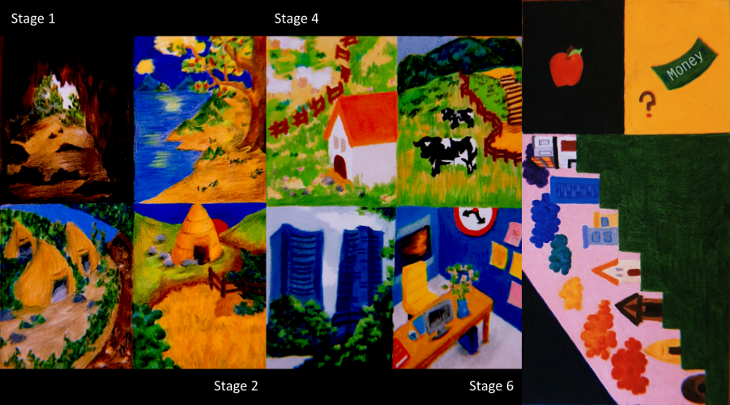

The Way I See: Marlo
A personal video project made with a friend and edited in DaVinci Resolve.
Workbench practice
Film, 3D environments, editing, and interactive media brought together in one practice.
01
A personal video project made with a friend and edited in DaVinci Resolve.
Directed, shot, and edited two promotional interviews for the New Brunswick College of Craft & Design annual fashion show using DaVinci Resolve.
Wrote, directed, shot, and edited short video studies. Old Clichés of New Generation brings together four films on the theme of light; Spirit Incubator explores color; and Can We Regain Our Time? considers time and movement.
02
Created a game trailer around an environment built in Unreal Engine 4 for a game development project. The production combined Blender, Substance Painter, After Effects, Adobe Premiere Pro, and DaVinci Resolve.
The project began with six stage concepts drawn directly in colored pencil, without an underdrawing—a roughly 60-hour study of the world before it entered the engine. As a new Unreal user, I kept the first plan deliberately achievable. Three months of prototyping changed that: growing technical confidence led me to revise the safe early direction and push the final environment further.
